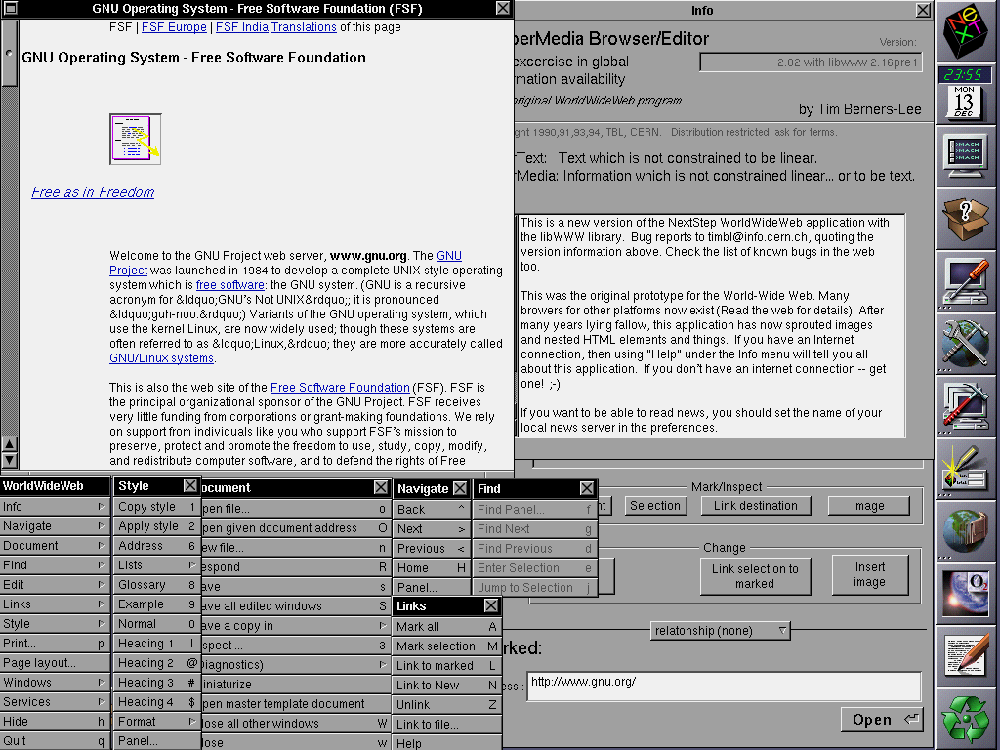

1990-1993
1990-1993
1990 skapas www eller World Wide Web som det står för. Det var en man som hette Tim Berners-Lee som skapade den första webbplatsen för ett forskningscentrum han arbetade på.
 1994-1995
1994-1995
Cookies stöter du ofta på när du surfar på nätet. Många tror att det är de informations-rutor en vanligtvis klickar bort innan en fortsätter surfa vidare på sidan. Men vad är cookies egentligen?
 1996
1996
Adobe Flash är ett datorprogram du kan använda för att skapa animerade bilder, video och dataspel. Nu började webbutvecklare använda sig av Flash och webben fick en helt ny stil. Det var möjligt att se animerade videor och bilder på en webbsida
 1998
1998
Google.com, den mest populära sökmotorn som nästan alla i världen känner till, föddes detta år.
 1999-2002
1999-2002
Ajax är ett program som finns till för att effektivisera konstruktionen av applikationer. Namnet står för Asynchronous JavaScript and XML, och det är ett namn som inkluderar flera olika tekniker.
 2004-2005
2004-2005
Facebook är ett socialt nätverk där en skapar en personlig profil med information om en själv. Därefter kan en “bli vänner” med andra personer som skapat profiler.
 2005-2006
2005-2006
År 2005 är det år då Piratpartiet skapas. Frågan är varför och hur?
 2006
2006
Twitter, Spotify, Iphone, like-knappen, surfplattan, instagram. Nu kunde en användare bara skicka iväg några meningar direkt ut till sina följare.
 2015
2015
 Framtiden
Framtiden
Hur kommer internet att se ut i framtiden? Det är svårt säga, men här är några spekulationer

Internets föds 1990-1993
Vad är www?
1990 skapas www eller World Wide Web som det står för. Det var en man som heter Tim Berners-Lee som skapade den första webbplatsen för ett forskningscentrum han arbetade på, som heter CERN. CERN ligger ligger på gränsen mellan Schweiz och Frankrike. Dessa två länderna diskuterar fortfarande vilket land som www uppfanns i, eftersom byggnaden ligger i Schweiz men Tims kontor råkade ligga på den franska sidan.
1993 släppte Tim rättigheterna till www så att alla skulle kunna använda det och 1994 flyttar Tim till USA och grundar en organisation som heter W3C (World Wide Web Consortium). De arbetar för att hålla webben öppen för alla.
Vad är HTTP?
HTTP står för Hypertext Transfer Protocol. Med andra ord så är det ett protokoll över hur en överför data på webben. Det är en del av IP, Internet Protocol, som ser till att det finns regler när det kommer till överföringen av datan. Varje dator har sin egna IP-adress när den är uppkopplad på internet.
När du vill gå in på en sida så skickas en förfrågan från browsern till en webb-server som i sin tur svarar med en ”http-statuskod”. Om förfrågan blir godkänd och webbsidan visas är statuskoden 200. Andra statuskoder som är ni säkert känner igen är statuskoden ”404-sidan kunde inte hittas” (se exempel nedan).
Wikimedia Commons, 24-08-2012
Vad är HTML?
HTML står för Hypertext Markup Language och skapades år 1991. Det är ett programmeringsspråk som används för att skapa webbsidor. När en dator begär åtkomst för en webbsida genom en browser så skickas det en HTML-kod tillbaka som säger till datorn hur webbsidan ser ut.
År 1996, kom något som heter CSS (Cascading Style Sheets). Detta ligger som en grund för att designa HTML-innehållet. I CSS kan en bestämma färger, typsnitt och form med mera för att förändra hur HTML-koden visas.
Nu kommer den första browsern, men vad är det?
En kanske kan tro att browsers som Internet Explorer, Safari, Firefox med mera är det som är internet. Men dessa är bara en mjukvara, eller med andra ord ett program som ger en åtkomst att komma ut på internet.
Den första browsern som lanserades var World Wide Web år 1990 och skapades av en man som heter Sir Tim Berners-Lee. Denna gav dock en begränsad bild av internet. Se själva på bilden nedan.

Wikipedia public Domain, 13 Dec 1994
År 1992 släpptes browserns Mosaic v0.1 som gjorde att fler började använda internet. Då denna browser ansågs ha en snyggare layout och vara lättare att förstå.
Titta på videon nedan för mer information.
Google, 27-08-2008